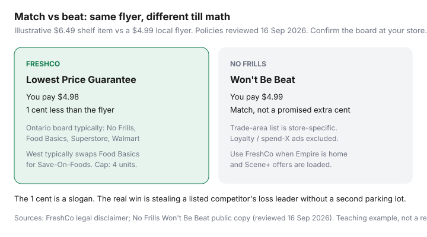

Food & Groceries · Canada
FreshCo Lowest Price Guarantee: How to Beat Flyer Prices by a Cent (And When Scene+ Still Wins)
Empire’s discount banner is not a clone of No Frills. FreshCo will sell a qualifying item for 1¢ less than a listed competitor’s current flyer — if that competitor is on this store’s board, the item is identical, and you stay inside four units. Bring a Winnipeg Save-On ad to a Mississauga FreshCo and the till will say no. That is the whole pain point: generic “FreshCo price matches” advice fails by province and by parking lot.
This is a Canada-specific walkthrough of the Lowest Price Guarantee: how the extra cent actually prints, Ontario versus Western competitor boards, private-label comparables, stacking Scene+ without violating “not combined with any other offer,” when No Frills is still the cheaper unmatched base, and a sample loop for Sobeys-family shoppers who also use Voilà. It is not U.S. Walmart Ad Match nostalgia. Walmart Canada does not match your FreshCo flyer; FreshCo may still match a Walmart flyer if Walmart is on the local list.
Disclosure: Scotiabank Scene+ co-branded cards and cashback portals are offer types that sometimes sit beside a FreshCo trip. Saving Optimizer may earn a commission if we later add those links. We do not invent partnerships. The 1¢ beat works with a phone screenshot and a list.
Key takeaways
- FreshCo beats a qualifying advertised price by 1¢. No Frills matches. The extra cent is branding; the real win is stealing a listed competitor’s loss leader in one parking lot.
- Ontario boards typically name No Frills, Food Basics, Superstore, and Walmart. Western boards typically swap Food Basics for Save-On-Foods. Photograph your sign.
- Identical national-brand items (same size and flavour), four units, current print or Flipp ad. Loyalty prices, spend-X, clearance, “free,” gift cards, liquor, and competitor websites are published exclusions.
- Load Scene+ offers on other lines. Do not treat a competitor’s member price as the thing being matched.
- Unmatched FreshCo is not automatically cheaper than No Frills. Pick the discounter family you already live in, then match.
How FreshCo’s 1¢ beat works in practice
FreshCo’s public legal disclaimer (reviewed 16 Sep 2026) says: if a listed discount competitor in that store’s geographic trade area advertises a lower price on an item FreshCo carries, show the competitor’s price in their current flyer (print or digital) and they will sell you the item for 1¢ less than that advertised price.
Three words do the work: listed, current, and advertises. A handwritten Walmart shelf tag is not an ad. A Voilà cart screenshot is competitor e-commerce — excluded. A U.S. circular is not an ad. A Flipp tile that still shows the banner, item, size, price, and date range usually is — which is why the Flipp grocery operating system exists, and why the price-matching system cares about a full screenshot.
Worked example (labelled, GTA): Heinz 1.36 L ketchup shelves at FreshCo for $6.49. No Frills flyer is $4.99 this week, No Frills is on the board, you have the full ad, one bottle. You pay $4.98. At No Frills on the same FreshCo flyer you would pay $4.99 under Won’t Be Beat. The extra cent is real and tiny. The $1.51 versus shelf is the reason you clipped.

Digital ads count if they are flyers. FreshCo’s copy names print or digital. Online-only cart prices and competitor websites do not. If the cheap number exists only after you log into Walmart.ca, leave it.
Ontario vs Western Canada competitor boards
The same legal paragraph limits matching to up to four discount competitors in the applicable trade area and then names typical boards. That is not a rumour from a Facebook group. It is on freshco.com/legal.
| Region (as published) | Typical four names | What that means in the aisle |
|---|---|---|
| Ontario | No Frills, Food Basics, Real Canadian Superstore, Walmart | Clip those four. Skip Metro, Sobeys, and Costco ads. |
| B.C., Alberta, Saskatchewan, Manitoba | No Frills, Real Canadian Superstore, Walmart, Save-On-Foods | Food Basics is an Ontario/Quebec Metro discounter — it will not be on a Calgary board. Save-On is. |
| Your specific store | Visit FreshCo or Chalo! FreshCo for the list | A downtown Toronto FreshCo is not a suburban one. Chalo! follows the same program language. |
| Atlantic / territories | Not named in that four-banner sentence | FreshCo density is thinner. Confirm in store before you build a week around matching. |
FreshCo does not price match Sobeys. Same parent (Empire). Flipp’s 2023 explainer and the legal boards agree. Costco is a warehouse club, not a discount supermarket on this list. Shoppers is not a grocer for this purpose.
- Once, photograph the competitor board at your FreshCo. Put it in the same album as Flipp screenshots.
- Favourite only those banners in Flipp. Do not clip a Maxi ad in Ontario and hope.
- If you move neighbourhoods, re-shoot the list. Trade areas follow the store, not your old commute.
Walmart Canada will not match your FreshCo flyer. FreshCo may still match a Walmart flyer. That one-way street is why matching at FreshCo is useful: you can steal a Walmart loss leader without shopping Walmart, if Walmart is on the board and the item is identical. Same logic as Won’t Be Beat, with a different slogan and a different loyalty overlay.
Four-unit limits and private-label comparables
Eligible matches are limited to four units of the identical product per customer. Four is the number you shop to. It is a week of yogurt, not a garage freezer of loss-leader chicken unless the SKU is huge.
Identical, in the published definition, means same brand, size, and attributes. Flavour counts. A 450 g tub is not a 650 g tub. Shrinkflation is why cashiers refuse “it’s the same crackers”: the UPC changed.
Private label is the discretionary lane: “comparable items in the case of private label (must be competitor’s private label product of same size and attributes).” Great Value beans versus Compliments, no name versus Compliments — a manager can say yes or no. Treat national-brand ketchup in the same millilitre size as the line that prints. Do not pick a fight over store-brand oats.
| You bring | Likely result | Why |
|---|---|---|
| Heinz 1.36 L at No Frills’ flyer price | Beat by 1¢ | Identical national brand, listed competitor, dates |
| Same ketchup, different millilitres | Refuse | Not identical size / UPC |
| Great Value beans vs Compliments | Often refuse | Private-label comparable is discretionary |
| Walmart.ca “online” price | Refuse | Competitor e-commerce / online pricing excluded |
| PC Optimum or Scene+ member price | Refuse | Loyalty-program discounts excluded |
| Spend $40 get $10 off meat | Refuse | Spend-X-get-X, clearance, and “free” excluded |
| Five identical yogurts | Four beat, one shelf | Quantity limited to 4 per item |
| Sobeys or Voilà screenshot | Refuse | Not a listed discount competitor; online excluded |
Other published exclusions: in-store third-party vendors, prescriptions, gift cards, liquor, tobacco, products that may not be discounted by law, competitor misprints. The guarantee “may not be used in combination with any other offer.” That sentence is why you do not demand a Scene+ 20× tile on the matched SKU.
Pairing price matches with Scene+ loaded offers
Two different systems share a barcode. Lowest Price Guarantee sets the shelf price you pay on the matched line. Scene+ is offers and events on the transaction. FreshCo’s public Scene+ page (covered in the Scene+ grocery guide) is offers-only — no silent percent on milk.
You generally cannot use a competitor’s loyalty member price as the thing being matched. You can still scan Scene+ after the match so loaded offers on other lines still fire, and so a $10 redemption (1,000 points) can knock the bill if you planned it. Do not expect a No Frills PC Optimum “20× salsa” to transfer. Load your FreshCo offers in the Sobeys-family app or MyGroceryOffers.ca before you shop, the same Sunday habit as the weekly grocery system.
A Scotiabank Scene+ Visa or Gold Amex is an offer type, not a requirement. Matching works on debit. Gold Amex’s 6× headline is useless if you are trying to farm points at No Frills — many Loblaw tills decline Amex — and it is still a fee product. See grocery cards by banner. Cashback portals sit beside gift-card stacks, not beside a till match.
Scene+ still wins when a loaded FreshCo offer on a staple you were buying anyway is worth more than hunting a 1¢ beat on a SKU you do not need. The guarantee is a scalpel. Offers are a rebate. Neither is a reason to shop Sobeys prices on Compliments beans.
FreshCo vs No Frills as your primary discount base
Unmatched shelves still decide the week. FreshCo is Empire’s discounter; No Frills is Loblaw’s. City-by-city rotation lives in the banner playbook. Matching does not flip that math if you fill the rest of the cart at the more expensive unmatched store.
- Make FreshCo home if it is the closest discounter, you already live in Scene+, and enough of the cart can be matched or is priced at discounter levels. Chalo! FreshCo is the same program language with a different assortment.
- Make No Frills home if PC Optimum, Flashfood, and Superstore pharmacy already own your week. Use FreshCo as a match source (clip the FreshCo flyer, match at No Frills) when FreshCo is on that No Frills board — not as a second full shop.
- Two-store only when the documented gap beats the extra parking lot. A $12 protein gap, 6 km, no toddler in January: go. A $3 yogurt gap across town: do not.
Superstore as a match base is the No Frills Won’t Be Beat article’s problem. At FreshCo, Superstore is usually one of the four names you clip from, not the store you shop. If FreshCo does not stock the identical SKU, there is nothing to beat. The program only covers items they carry.
A sample shopping loop for Sobeys-family shoppers
This is the Empire-household version of Sunday. It sits on top of flyer-first meals, not instead of them.
- Thursday or Friday: Open Flipp. Search chicken, eggs, yogurt, your coffee. Clip identical national-brand ads from banners on this FreshCo’s board only. Full screenshot: logo, size, price, dates.
- Sunday, 12 minutes: Fridge photo. Five dinners from the clipped protein. Load Scene+ weekly and personalized offers that match the list. Do not add a SKU because the offer is pretty.
- In store: Matches at the front of the belt. Album open before the first beep. Four units. One screenshot per SKU. Say the competitor and the price. If the till says no, ask once whether the banner is on the board. Then pay shelf or skip.
- Scan Scene+. Redeem 1,000 points for $10 only if it changes this bill. Check the receipt.
- Voilà is backup, not the match engine. Pickup or delivery fees eat a 1¢ beat. Produce you care about still wants a human. Compare fees in PC Express vs Voilà vs Instacart if a brutal week needs a slot — then come back in-store next Thursday.
Worked loop (labelled estimate, suburban Ontario): four identicals, flyer gap $18, four 1¢ beats, 10 minutes of clipping, no extra drive. Keep it. Same $18 if it requires a Sobeys fill-in because FreshCo was out of bananas and you “might as well” buy the rest of dinner at full-service prices — leave the fill-in. That is how Empire shoppers accidentally pay Sobeys for a FreshCo identity.
Sources & date stamps
- FreshCo, Legal Disclaimer / Lowest Price Guarantee (public copy: 1¢ beat, four competitors, Ontario vs Western boards, 4-unit cap, exclusions including e-commerce, loyalty, spend-X; reviewed 16 Sep 2026).
- Flipp, “Does FreshCo Price Match?” (10 May 2023 explainer of the same boards; still useful, verify against current legal copy).
- True Canadian Finds, stores that price match in Canada (2026 roundup of 4-unit norms and local boards).
- No Frills Won’t Be Beat public copy for the match-versus-beat contrast; see also our Won’t Be Beat how-to.
- Statistics Canada Daily, CPI August 2026 (14 Sep 2026): food from stores +2.8% year over year; still +29.0% versus August 2021 — context for why matching high-dollar identicals still matters.
Frequently asked questions
Does FreshCo match a competitor’s price or beat it?
FreshCo’s Lowest Price Guarantee sells a qualifying identical item for 1¢ less than the competitor’s advertised flyer price. No Frills Won’t Be Beat typically matches only. You still have to show a current print or digital ad from a listed local competitor.
Which stores does FreshCo price match in Ontario versus the West?
Public FreshCo legal copy (reviewed 16 Sep 2026) names up to four discount competitors in the trade area: in Ontario typically No Frills, Food Basics, Real Canadian Superstore, and Walmart; in B.C., Alberta, Saskatchewan, and Manitoba typically No Frills, Superstore, Walmart, and Save-On-Foods. Photograph the board at your store. Lists change.
Will FreshCo match a Sobeys or Voilà price?
Sobeys is the same Empire family and is not on the published discount-competitor boards. Competitor e-commerce and online pricing are excluded. Shop Voilà for convenience, not as a match proof at FreshCo.
Can I match Great Value or no name to Compliments?
Private-label matching is comparable-item territory: same size and attributes, at FreshCo’s discretion. National-brand identical items (same brand, size, flavour) are the reliable path. Do not argue a UPC mismatch at the till.
Can I stack a price match with a Scene+ offer?
The legal copy says the guarantee may not be used in combination with any other offer, and loyalty-program discounts are excluded as the thing being matched. Load Scene+ offers on other lines, then scan. Do not expect a competitor’s member price or a FreshCo personalized deal to ride on the matched SKU.